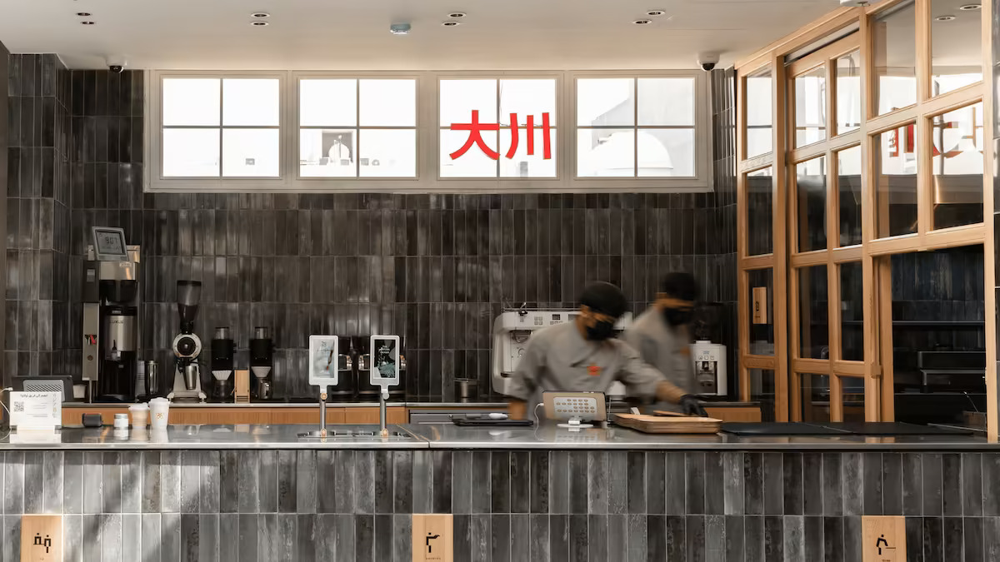

OKAWA's vision is to be the first destination to experience the art of Japanese pancakes, presented with touches in harmony with the Saudi taste.
Committed to providing unforgettable experience embodies excellence in merging cultures.
Our mission is to immerse visitors in wonderful and refreshing flavors, complemented by the whisking of the matcha cup prepared in the original way.
This ensures a sensory experience that transports the visitor to the heart of Japan, leaving them with unique memories that make them eager to return.

Embrace the art of "omotenashi" by warmly welcoming every guest, creating a memorable experience that extends beyond food to genuine care and comfort.
Prioritize excellence in every ingredient, preparation method, and presentation, ensuring that every bite and sip meets the highest standards.
By integrating Japanese and Saudi cultures and offering original Japanese products with innovative Saudi flavors, while preserving their fundamentals.
Fostering a sense of belonging, engaging with the community, and contributing positively to society in various fields.